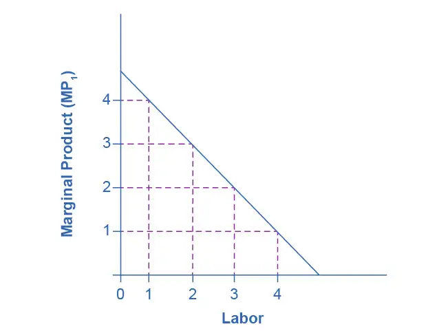
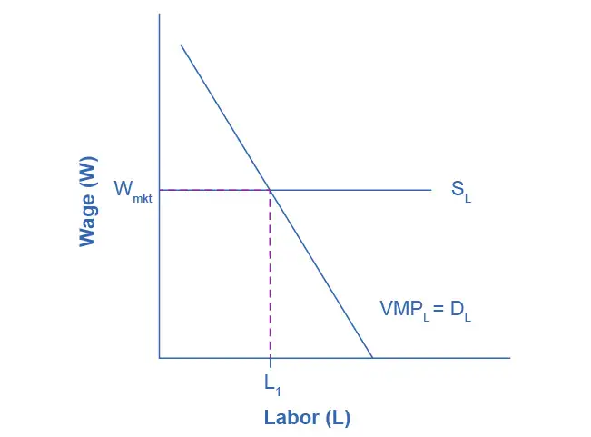
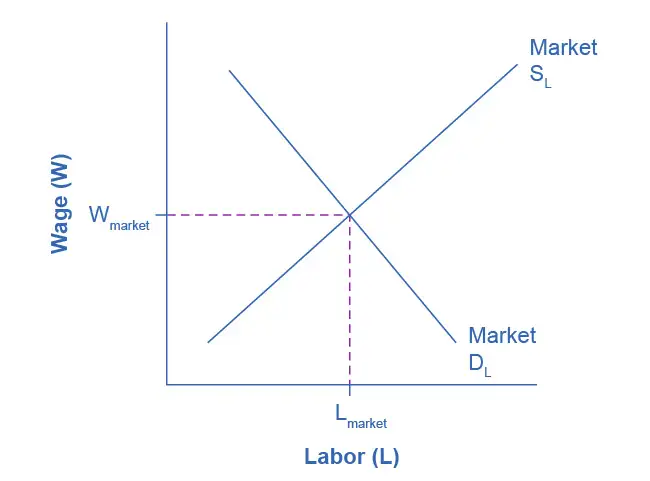
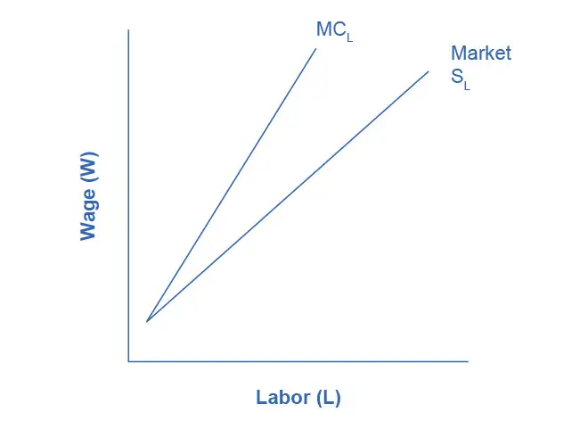
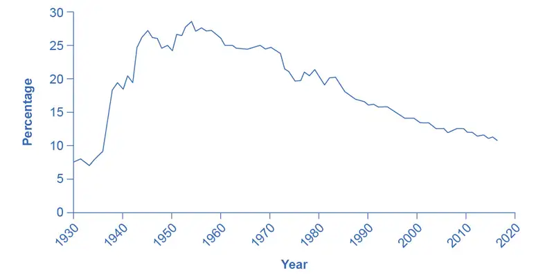

Chapter 14: Labor Markets and Income¶
Introduction¶
Bring It Home: The Increasing Value of a College Degree
Working your way through college used to be fairly common in the United States. According to a 2015 study by the Georgetown Center on Education and the Workforce, 40% of college students work 30 hours or more per week.
At the same time, the cost of college seems to rise every year. The data show that between the 2000–2001 academic year and the 2019–2020 academic year, the cost of tuition, fees, and room and board has slightly more than doubled for private four-year colleges, and has increased by a factor of almost 2.5 for public four-year colleges. Thus, even full time employment may not be enough to cover college expenses anymore. Working full time at minimum wage—40 hours per week, 52 weeks per year—earns $15,080 before taxes, which is substantially less than the more than $25,000 estimated as the average cost in 2022 for a year of college at a public university. The result of these costs is that student loan debt topped $1.3 trillion this year.
Despite these disheartening figures, the value of a bachelor’s degree has never been higher. How do we explain this? This chapter will tell us.
Chapter Outline: Introduction to Labor Markets and Income
In this chapter, you will learn about:
- The theory of labor markets
- How wages are determined in an imperfectly competitive labor market
- How unions affect wages and employment
- How labor market outcomes are determined under Bilateral Monopoly
- Theories of Employment Discrimination, and
- How Immigration affects labor market outcomes
In a market economy like the United States, income comes from ownership of the means of production: resources or assets. More precisely, one’s income is a function of two things: the quantity of each resource one owns, and the value society places on those resources. Recall from the chapter on Production, Costs, and Industry Structure, each factor of production has an associated factor payment. For the majority of us, the most important resource we own is our labor. Thus, most of our income is wages, salaries, commissions, tips and other types of labor income. Your labor income depends on how many hours you work and the wage rate an employer will pay you for those hours. At the same time, some people own real estate, which they can either use themselves or rent out to other users. Some people have financial assets like bank accounts, stocks and bonds, for which they earn interest, dividends or some other form of income.
Each of these factor payments, like wages for labor and interest for financial capital, is determined in their respective factor markets. For the rest of this chapter, we will focus on labor markets, but other factor markets operate similarly. Later in Chapter 17 we will describe how this works for financial capital.
14.1 The Theory of Labor Markets¶
Learning Objectives
By the end of this section, you will be able to:
- Describe the demand for labor in perfectly competitive output markets
- Describe the demand for labor in imperfectly competitive output markets
- Identify what determines the going market rate for labor
Clear It Up: What is the labor market?
The labor market is the term that economists use for all the different markets for labor. There is no single labor market. Rather, there is a different market for every different type of labor. Labor differs by type of work (e.g. retail sales vs. scientist), skill level (entry level or more experienced), and location (the market for administrative assistants is probably more local or regional than the market for university presidents). While each labor market is different, they all tend to operate in similar ways. For example, when wages go up in one labor market, they tend to go up in others too. When economists talk about the labor market, they are describing these similarities.
The labor market, like all markets, has a demand and a supply. Why do firms demand labor? Why is an employer willing to pay you for your labor? It’s not because the employer likes you or is socially conscious. Rather, it’s because your labor is worth something to the employer--your work brings in revenues to the firm. How much is an employer willing to pay? That depends on the skills and experience you bring to the firm.
If a firm wants to maximize profits, it will never pay more (in terms of wages and benefits) for a worker than the value of their marginal productivity to the firm. We call this the first rule of labor markets.
Suppose a worker can produce two widgets per hour and the firm can sell each widget for $4 each. Then the worker is generating $8 per hour in revenues to the firm, and a profit-maximizing employer will pay the worker up to, but no more than, $8 per hour, because that is what the worker is worth to the firm.
Recall the definition of marginal product. Marginal product is the additional output a firm can produce by adding one more worker to the production process. Since employers often hire labor by the hour, we’ll define marginal product as the additional output the firm produces by adding one more worker hour to the production process. In this chapter, we assume that workers in a particular labor market are homogeneous—they have the same background, experience and skills and they put in the same amount of effort. Thus, marginal product depends on the capital and technology with which workers have to work.
A typist can type more pages per hour with an electric typewriter than a manual typewriter, and the typist can type even more pages per hour with a personal computer and word processing software. A ditch digger can dig more cubic feet of dirt in an hour with a backhoe than with a shovel.
Thus, we can define the demand for labor as the marginal product of labor times the value of that output to the firm.
Table 14.1 Marginal Product of Labor
| # Workers (L) | 1 | 2 | 3 | 4 |
| MPL | 4 | 3 | 2 | 1 |

On what does the value of each worker’s marginal product depend? If we assume that the employer sells its output in a perfectly competitive market, the value of each worker’s output will be the market price of the product. Thus,
Demand for Labor = MPL x P = Value of the Marginal Product of Labor
We show this in Table 14.2, which is an expanded version of Table 14.1
Table 14.2 Value of the Marginal Product of Labor
| # Workers (L) | 1 | 2 | 3 | 4 |
| MPL | 4 | 3 | 2 | 1 |
| Price of Output | $4 | $4 | $4 | $4 |
| VMPL | $16 | $12 | $8 | $4 |
Note that the value of each additional worker is less than the value of the ones who came before.
![The graph illustrates the value of the marginal product of labor. The x-axis shows the amount of labor, indicating units of labor from 0 to 4. The y-axis shows the value of the marginal product of labor, and ranges from 0 to 16 in increments of 4. The initial point shown is labor equal to 1 with a value of marginal product of 16. The curve is downward sloping from there, to a point of labor equal to 4 and a value of marginal product equal to 4. The value of marginal product equation is shown as marginal product of labor times price.](img/cnx-econ3e-c14-017.webp)
Demand for Labor in Perfectly Competitive Output Markets¶
The question for any firm is how much labor to hire.
We can define a Perfectly Competitive Labor Market as one where firms can hire all the labor they want at the going market wage. Think about secretaries in a large city. Employers who need secretaries can probably hire as many as they need if they pay the going wage rate.
Graphically, this means that firms face a horizontal supply curve for labor, as Figure 14.3 shows.
Given the market wage, profit maximizing firms hire workers up to the point where: Wmkt = VMPL

Clear It Up: Derived Demand
Economists describe the demand for inputs like labor as a derived demand. Since the demand for labor is MPL*P, it is dependent on the demand for the product the firm is producing. We show this by the P term in the demand for labor. An increase in demand for the firm’s product drives up the product’s price, which increases the firm’s demand for labor. Thus, we derive the demand for labor from the demand for the firm’s output.
Demand for Labor in Imperfectly Competitive Output Markets¶
If the employer does not sell its output in a perfectly competitive industry, they face a downward sloping demand curve for output, which means that in order to sell additional output the firm must lower its price. This is true if the firm is a monopoly, but it’s also true if the firm is an oligopoly or monopolistically competitive. In this situation, the value of a worker’s marginal product is the marginal revenue, not the price. Thus, the demand for labor is the marginal product times the marginal revenue.
The Demand for Labor = MPL x MR = Marginal Revenue Product
Table 14.3 Marginal Revenue Product
| # Workers (L) | 1 | 2 | 3 | 4 |
| MPL | 4 | 3 | 2 | 1 |
| Marginal Revenue | $4 | $3 | $2 | $1 |
| MRPL | $16 | $9 | $4 | $1 |
![The graph illustrates the marginal revenue product of labor. The x-axis shows the amount of labor, indicating units of labor from 0 to 4. The y-axis shows the marginal revenue product of labor, and ranges from 0 to 16 in increments of 4. The initial point shown is labor equal to 1 with a marginal revenue product of 16. The curve is downward sloping from there, to a point of labor equal to 4 and a marginal revenue product equal to 4. The marginal revenue product equation is shown as marginal product of labor times marginal revenue.](img/cnx-econ3e-c14-019.webp)
Everything else remains the same as we described above in the discussion of the labor demand in perfectly competitive labor markets. Given the market wage, profit-maximizing firms will hire workers up to the point where the market wage equals the marginal revenue product, as Figure 14.6 shows.
![The graph shows the Marginal Product of Labor. The x-axis is Labor. The y-axis is Wage. A horizontal line indicating the going market wage projects from about halfway up the y-axis. Two curves are includesd in order to demonstrate the difference for firms with market power. The first curve represents normal firms, and proceeds from right to left in a downward direction; where it intersects the Wage horizontal line, it is point L1. The second curve, representing firms with market power, is steeper, and intersects the Wage line earlier (at a lower level of employment), at point L2, where the going market wage equal's the firm's marginal revenue product.](img/cnx-econ3e-c14-020.webp)
Clear It Up: Do Profit Maximizing Employers Exploit Labor?
If you look back at Figure 14.4, you will see that the firm pays only the last worker it hires what they’re worth to the firm. Every other worker brings in more revenue than the firm pays them. This has sometimes led to the claim that employers exploit workers because they do not pay workers what they are worth. Let’s think about this claim. The first worker is worth $x to the firm, and the second worker is worth $y, but why are they worth that much? It is because of the capital and technology with which they work. The difference between workers’ worth and their compensation goes to pay for the capital and technology, without which the workers wouldn’t have a job. The difference also goes to the employer’s profit, without which the firm would close and workers wouldn’t have a job. The firm may be earning excessive profits, but that is a different topic of discussion.
What Determines the Going Market Wage Rate?¶
In the chapter on Labor and Financial Markets, we learned that the labor market has demand and supply curves like other markets. The demand for labor curve is a downward sloping function of the wage rate. The market demand for labor is the horizontal sum of all firms’ demands for labor. The supply of labor curve is an upward sloping function of the wage rate. This is because if wages for a particular type of labor increase in a particular labor market, people with appropriate skills may change jobs, and vacancies will attract people from outside the geographic area. The market supply of labor is the horizontal summation of all individuals’ supplies of labor.

Like all equilibrium prices, the market wage rate is determined through the interaction of supply and demand in the labor market. Thus, we can see in Figure 14.7 for competitive markets the wage rate and number of workers hired.
The FRED database has a great deal of data on labor markets, starting at the wage rate and number of workers hired.
The United States Census Bureau for the Bureau of Labor Statistics publishes The Current Population Survey, which is a monthly survey of households (you can find a link to it by going to the FRED database found in the previous link), which provides data on labor supply, including numerous measures of the labor force size (disaggregated by age, gender and educational attainment), labor force participation rates for different demographic groups, and employment. It also includes more than 3,500 measures of earnings by different demographic groups.
The Current Employment Statistics, which is a survey of businesses, offers alternative estimates of employment across all sectors of the economy.
The FRED database, found in the previous link, also has a link labeled "Productivity and Costs" has a wide range of data on productivity, labor costs, and profits across the business sector.
14.2 Wages and Employment in an Imperfectly Competitive Labor Market¶
Learning Objectives
By the end of this section, you will be able to:
- Define monopsony power
- Explain how imperfectly competitive labor markets determine wages and employment, where employers have market power
In the chapters on market structure, we observed that while economists use the theory of perfect competition as an ideal case of market structure, there are very few examples of perfectly competitive industries in the real world. What about labor markets? How many labor markets are perfectly competitive? There are probably more examples of perfectly competitive labor markets than perfectly competitive product markets, but that doesn’t mean that all labor markets are competitive.
When a job applicant is bargaining with an employer for a position, the applicant is often at a disadvantage—needing the job more than the employer needs that particular applicant. John Bates Clark (1847–1938), often named as the first great American economist, wrote in 1907: “In the making of the wages contract the individual laborer is always at a disadvantage. He has something which he is obliged to sell and which his employer is not obliged to take, since he [that is, the employer] can reject single men with impunity.”
To give workers more power, the U.S. government has passed, in response to years of labor protests, a number of laws to create a more equal balance of power between workers and employers. These laws include some of the following:
- Setting minimum hourly wages
- Setting maximum hours of work (at least before employers pay overtime rates)
- Prohibiting child labor
- Regulating health and safety conditions in the workplace
- Preventing discrimination on the basis of race, ethnicity, gender, sexual orientation, and age
- Requiring employers to provide family leave
- Requiring employers to give advance notice of layoffs
- Covering workers with unemployment insurance
- Setting a limit on the number of immigrant workers from other countries
Table 14.4 lists some prominent U.S. workplace protection laws. Many of the laws listed in the table were only the start of labor market regulations in these areas and have been followed, over time, by other related laws, regulations, and court rulings.
Table 14.4 Prominent U.S. Workplace Protection Laws
| Law | Protection |
|---|---|
| National Labor- Management Relations Act of 1935 (the “Wagner Act”) | Establishes procedures for establishing a union that firms are obligated to follow; sets up the National Labor Relations Board for deciding disputes |
| Social Security Act of 1935 | Under Title III, establishes a state-run system of unemployment insurance, in which workers pay into a state fund when they are employed and received benefits for a time when they are unemployed |
| Fair Labor Standards Act of 1938 | Establishes the minimum wage, limits on child labor, and rules requiring payment of overtime pay for those in jobs that are paid by the hour and exceed 40 hours per week |
| Taft-Hartley Act of 1947 | Allows states to decide whether all workers at a firm can be required to join a union as a condition of employment; in the case of a disruptive union strike, permits the president to declare a “cooling-off period” during which workers have to return to work |
| Civil Rights Act of 1964 | Title VII of the Act prohibits discrimination in employment on the basis of race, gender, national origin, religion, or sexual orientation |
| Occupational Health and Safety Act of 1970 | Creates the Occupational Safety and Health Administration (OSHA), which protects workers from physical harm in the workplace |
| Employee Retirement and Income Security Act of 1974 | Regulates employee pension rules and benefits |
| Pregnancy Discrimination Act of 1978 | Prohibits discrimination against women in the workplace who are planning to get pregnant or who are returning to work after pregnancy |
| Immigration Reform and Control Act of 1986 | Prohibits hiring of illegal immigrants; requires employers to ask for proof of citizenship; protects rights of legal immigrants |
| Worker Adjustment and Retraining Notification Act of 1988 | Requires employers with more than 100 employees to provide written notice 60 days before plant closings or large layoffs |
| Americans with Disabilities Act of 1990 | Prohibits discrimination against those with disabilities and requires reasonable accommodations for them on the job |
| Family and Medical Leave Act of 1993 | Allows employees to take up to 12 weeks of unpaid leave per year for family reasons, including birth or family illness |
| Pension Protection Act of 2006 | Penalizes firms for underfunding their pension plans and gives employees more information about their pension accounts |
| Lilly Ledbetter Fair Pay Act of 2009 | Restores protection for pay discrimination claims on the basis of sex, race, national origin, age, religion, or disability |
There are two sources of imperfect competition in labor markets. These are demand side sources, that is, labor market power by employers, and supply side sources: labor market power by employees. In this section we will discuss the former. In the next section we will discuss the latter.
A competitive labor market is one where there are many potential employers for a given type of worker, say a secretary or an accountant. Suppose there is only one employer in a labor market. Because that employer has no direct competition in hiring, if they offer lower wages than would exist in a competitive market, employees will have few options. If they want a job, they must accept the offered wage rate. Since the employer is exploiting its market power, we call the firm a monopsony, a term introduced and widely discussed by Joan Robinson (though she credited scholar Bertrand Hallward with invention of the word). The classical example of monopsony is the sole coal company in a West Virginia town. If coal miners want to work, they must accept what the coal company is paying. This is not the only example of monopsony. Think about surgical nurses in a town with only one hospital. A situation in which employers have at least some market power over potential employees is not that unusual. After all, most firms have many employees while there is only one employer. Thus, even if there is some competition for workers, it may not feel that way to potential employees unless they do their research and find the opposite.
How does market power by an employer affect labor market outcomes? Intuitively, one might think that wages will be lower than in a competitive labor market. Let’s prove it. We will tell the story for a monopsonist, but the results will be qualitatively similar, although less extreme, for any firm with labor market power.
Think back to monopoly. The good news for the firm is that because the monopolist is the sole supplier in the market, it can charge any price it wishes. The bad news is that if it wants to sell a greater quantity of output, it must lower the price it charges. Monopsony is analogous. Because the monopsonist is the sole employer in a labor market, it can offer any wage that it wishes. However, because they face the market supply curve for labor, if they want to hire more workers, they must raise the wage they pay. This creates a quandary, which we can understand by introducing a new concept: the marginal cost of labor. The marginal cost of labor is the cost to the firm of hiring one more worker. However, here is the thing: we assume that the firm is determining how many workers to hire in total. They are not hiring sequentially. Let’s look how this plays out with the example in Table 14.5.
Table 14.5 The Marginal Cost of Labor
| Supply of Labor | 1 | 2 | 3 | 4 | 5 |
| Wage Rate | $1 per hour | $2 per hour | $3 per hour | $4 per hour | $5 per hour |
| Total Cost of Labor | $1 | $4 | $9 | $16 | $25 |
| Marginal Cost of Labor | $1 | $3 | $5 | $7 | $9 |
There are a couple of things to notice from the table. First, the marginal cost increases faster than the wage rate. In fact, for any number of workers more than one, the marginal cost of labor is greater than the wage. This is because to hire one more worker requires paying a higher wage rate, not just for the new worker but for all the previous hires also. We can see this graphically in Figure 14.7.

![The x-axis is Labor, and the y-axis is Wages. There are three curves. The curve representing typical market supply for labor slopes upward from the bottom left to the top right. The curve representing the marginal cost of hiring additional workers also, slopes from the bottom left to the top right, but it is steeper, and therefore always above the regular market supply curve. The third curve is the labor demand, sloping from the top left to the bottom right. Graphically, we can draw a vertical line up from Lm to the Supply Curve for label and then read the wage Wm off the vertical axis to the left.](img/cnx-econ3e-c14-023.webp)
If the firm wants to maximize profits, it will hire labor up to the point Lm where DL = VMP (or MRP) = MCL, as Figure 14.9 shows. Then, the supply curve for labor shows the wage the firm will have to pay to attract Lm workers. Graphically, we can draw a vertical line up from Lm to the Supply Curve for the label and then read the wage Wm off the vertical axis to the left.
How does this outcome compare to what would occur in a perfectly competitive market? A competitive market would operate where DL = SL, hiring Lc workers and paying Wc wage. In other words, under monopsony employers hire fewer workers and pay a lower wage. While pure monopsony may be rare, many employers have some degree of market power in labor markets. The outcomes for those employers will be qualitatively similar though not as extreme as monopsony.
![The graph illustrates a labor market with the demand for labor shown as downward-sloping, and an upward-sloping labor supply curve. The x-axis is Labor, and the y-axis is Wages. These intersect at the competitive equilibrium, and the amount of labor is labeled L C and the wage rate is W C. The marginal cost of labor curve is also shown. It is upward-sloping, steeper than, and above the labor supply curve. It intersects labor demand at a point higher up the labor demand curve. From this intersection, a dashed vertical line is drawn down that intersects the labor supply curve, and from that point a dashed horizontal line is drawn over to the wage axis. This shows a lower wage rate, W M, the monopsony wage. Also shown is the lower amount of monopsony labor, L M.](img/cnx-econ3e-c14-024.webp)
14.3 Market Power on the Supply Side of Labor Markets: Unions¶
Learning Objectives
By the end of this section, you will be able to:
- Explain the concept of labor unions, including membership levels and wages
- Evaluate arguments for and against labor unions
- Analyze reasons for the decline in U.S. union membership
A labor union is an organization of workers that negotiates with employers over wages and working conditions. A labor union seeks to change the balance of power between employers and workers by requiring employers to deal with workers collectively, rather than as individuals. As such, a labor union operates like a monopoly in a labor market. We sometimes call negotiations between unions and firms collective bargaining.
The subject of labor unions can be controversial. Supporters of labor unions view them as the workers’ primary line of defense against efforts by profit-seeking firms to hold down wages and benefits. Critics of labor unions view them as having a tendency to grab as much as they can in the short term, even if it means injuring workers in the long run by driving firms into bankruptcy or by blocking the new technologies and production methods that lead to economic growth. We will start with some facts about union membership in the United States.
Facts about Union Membership and Pay¶
According to the U.S. Bureau of Labor and Statistics, about 10.3% of all U.S. workers belong to unions. This represents nearly a 50% reduction since 1983 (the earliest year for which comparable data are available), when union members were 20.1% of all workers. Following are some facts about unions for 2021 (note that we are using the population categories and group names utilized in the data collection and publication):
- 10.6% of U.S. male workers belong to unions; 9.9% of female workers do
- 10.7% of White workers, 12.3% of Black workers, and 9.8 % of Hispanic workers belong to unions
- 11.8% of full-time workers and 5.7% of part-time workers are union members
- 4.4% of workers ages 16–24 belong to unions, as do 13.2% of workers ages 45-54
- Occupations in which relatively high percentages of workers belong to unions are the federal government (26.0% belong to a union), state government (29.9%), local government (41.7%); transportation and utilities (17.6%); natural resources, construction, and maintenance (15.9%); and production, transportation, and material moving (13.3%)
- Occupations that have relatively low percentages of unionized workers are agricultural workers (1.7%), financial services (1.9%), professional and business services (2.2%), leisure and hospitality (2.2%), and wholesale and retail trade (4.5%)
In summary, the percentage of workers belonging to a union is higher for men than women; higher for Black than for White or Hispanic people; higher for the 45–64 age range; and higher among workers in government and manufacturing than workers in agriculture or service-oriented jobs. Table 14.6 lists the largest U.S. labor unions and their membership.
Table 14.6 The Largest American Unions in 2021 (Source: U.S. Department of Labor and individual union websites)
| Union | Membership |
|---|---|
| National Education Association (NEA) | 3.0 million |
| Service Employees International Union (SEIU) | 2.0 million |
| American Federation of Teachers (AFT) | 1.7 million |
| International Brotherhood of Teamsters (IBT) | 1.4 million |
| The American Federation of State, County, and Municipal Workers (AFSCME) | 1.6 million |
| United Food and Commercial Workers International Union | 1.3 million |
| International Brotherhood of Electrical Workers (IBEW) | 775,000 |
| United Steelworkers | 625,000 |
| International Association of Machinists and Aerospace Workers | 569,000 |
| International Union, United Automobile, Aerospace and Agricultural Implement Workers of America (UAW) | 408,000 |
In terms of pay, benefits, and hiring, U.S. unions offer a good news/bad news story. The good news for unions and their members is that their members earn about 20% more than nonunion workers, even after adjusting for factors such as years of work experience and education level. The bad news for unions is that the share of U.S. workers who belong to a labor union has been steadily declining for 50 years, as Figure 14.11 shows. About one-quarter of all U.S. workers belonged to a union in the mid-1950s, but only 10.3% of U.S. workers are union members today. If you leave out government workers (which includes teachers in public schools), only 6.1% of the workers employed by private firms now work for a union.

The following section analyzes the higher pay union workers receive compared the pay rates for nonunion workers. The section after that analyzes declining union membership levels. An overview of these two issues will allow us to discuss many aspects of how unions work.
Higher Wages for Union Workers¶
How does a union affect wages and employment? Because a union is the sole supplier of labor, it can act like a monopoly and ask for whatever wage rate it can obtain for its workers. If employers need workers, they have to meet the union’s wage demand.
What are the limits on how much higher pay union workers can receive? To analyze these questions, let’s consider a situation where all firms in an industry must negotiate with a single union, and no firm is allowed to hire nonunion labor. If no labor union existed in this market, then equilibrium (E) in the labor market would occur at the intersection of the demand for labor (D) and the supply of labor (S) as we see in Figure 14.12. This is the same result as we showed in Figure 14.6 above. The union can, however, threaten that, unless firms agree to the wages they demand, the workers will strike. As a result, the labor union manages to achieve, through negotiations with the firms, a union wage of Wu for its members, above what the equilibrium wage would otherwise have been.
![This graph illustrates a labor market, with an upward-sloping labor supply curve and a downward-sloping labor demand. The x-axis shows the quantity of labor and the y-axis shows the wage rate. Labor demand and labor supply intersect at a point labeled E, labor market equilibrium, with an equilibrium wage of W e and an equilibrium quantity of labor of Q e. There is a union wage depicted, W u, which is above W e. This leads to an excess supply of labor, which is represented by a dashed horizontal line between labor demand and labor supply.](img/cnx-econ3e-c15-004.webp)
This labor market situation resembles what a monopoly firm does in selling a product, but in this case a union is a monopoly selling labor to firms. At the higher union wage Wu, the firms in this industry will hire less labor than they would have hired in equilibrium. Moreover, an excess supply of workers want union jobs, but firms will not be hiring for such jobs.
From the union point of view, workers who receive higher wages are better off. However, notice that the quantity of workers (Qd) hired at the union wage Wu is smaller than the quantity Qe that the firm would have hired at the original equilibrium wage. A sensible union must recognize that when it pushes up the wage, it also reduces the firms’ incentive to hire. This situation does not necessarily mean that union workers are fired. Instead, it may be that when union workers move on to other jobs or retire, they are not always replaced, or perhaps when a firm expands production, it expands employment somewhat less with a higher union wage than it would have done with the lower equilibrium wage. Other situations could be that a firm decides to purchase inputs from nonunion producers, rather than producing them with its own highly paid unionized workers, or perhaps the firm moves or opens a new facility in a state or country where unions are less powerful.
From the firm’s point of view, the key question is whether union workers’ higher wages are matched by higher productivity. If so, then the firm can afford to pay the higher union wages and, the demand curve for “unionized” labor could actually shift to the right. This could reduce the job losses as the equilibrium employment level shifts to the right and the difference between the equilibrium and the union wages will have been reduced. If worker unionization does not increase productivity, then the higher union wage will cause lower profits or losses for the firm.
Union workers might have higher productivity than nonunion workers for a number of reasons. First, higher wages may elicit higher productivity. Second, union workers tend to stay longer at a given job, a trend that reduces the employer’s costs for training and hiring and results in workers with more years of experience. Many unions also offer job training and apprenticeship programs.
In addition, firms that are confronted with union demands for higher wages may choose production methods that involve more physical capital and less labor, resulting in increased labor productivity. Table 14.7 provides an example. Assume that a firm can produce a home exercise cycle with three different combinations of labor and manufacturing equipment. Say that the firm pays labor $16 an hour (including benefits) and the machines for manufacturing cost $200 each. Under these circumstances, the total cost of producing a home exercise cycle will be lowest if the firm adopts the plan of 50 hours of labor and one machine, as the table shows. Now, suppose that a union negotiates a wage of $20 an hour including benefits. In this case, it makes no difference to the firm whether it uses more hours of labor and fewer machines or less labor and more machines, although it might prefer to use more machines and to hire fewer union workers. (After all, machines never threaten to strike—but they do not buy the final product or service either.)
In the final column of the table, the wage has risen to $24 an hour. In this case, the firm clearly has an incentive for using the plan that involves paying for fewer hours of labor and using three machines. If management responds to union demands for higher wages by investing more in machinery, then union workers can be more productive because they are working with more or better physical capital equipment than the typical nonunion worker. However, the firm will need to hire fewer workers.
Table 14.7 Three Production Choices to Manufacture a Home Exercise Cycle
| Hours of Labor | Number of Machines | Cost of Labor + Cost of Machine $16/hour | Cost of Labor + Cost of Machine $20/hour | Cost of Labor + Cost of Machine $24/hour |
|---|---|---|---|---|
| 30 | 3 | $480 + $600 = $1,080 | $600 + $600 = $1,200 | $720 + $600 = $1,320 |
| 40 | 2 | $640 + $400 = $1,040 | $800 + $400 = $1,200 | $960 + $400 = $1,360 |
| 50 | 1 | $800 + $200 = $1,000 | $1,000 + $200 = $1,200 | $1,200 + $200 = $1,400 |
In some cases, unions have discouraged the use of labor-saving physical capital equipment—out of the reasonable fear that new machinery will reduce the number of union jobs. For example, in 2015, the union representing longshoremen who unload ships and the firms that operate shipping companies and port facilities staged a work stoppage that shut down the ports on the western coast of the United States. Two key issues in the dispute were the desire of the shipping companies and port operators to use handheld scanners for record-keeping and computer-operated cabs for loading and unloading ships—changes which the union opposed, along with overtime pay. President Obama threatened to use the Labor Management Relations Act of 1947—commonly known as the Taft-Hartley Act—where a court can impose an 80-day “cooling-off period” in order to allow time for negotiations to proceed without the threat of a work stoppage. Federal mediators were called in, and the two sides agreed to a deal in February 2015. The ultimate agreement allowed the new technologies, but also kept wages, health, and pension benefits high for workers. In the past, presidential use of the Taft-Hartley Act sometimes has made labor negotiations more bitter and argumentative but, in this case, it seems to have smoothed the road to an agreement.
In other instances, unions have proved quite willing to adopt new technologies. In one prominent example, during the 1950s and 1960s, the United Mineworkers union demanded that mining companies install labor-saving machinery in the mines. The mineworkers’ union realized that over time, the new machines would reduce the number of jobs in the mines, but the union leaders also knew that the mine owners would have to pay higher wages if the workers became more productive, and mechanization was a necessary step toward greater productivity.
In fact, in some cases union workers may be more willing to accept new technology than nonunion workers, because the union workers believe that the union will negotiate to protect their jobs and wages, whereas nonunion workers may be more concerned that the new technology will replace their jobs. In addition, union workers, who typically have higher job market experience and training, are likely to suffer less and benefit more than non-union workers from the introduction of new technology. Overall, it is hard to make a definitive case that union workers as a group are always either more or less welcoming to new technology than are nonunion workers
The Decline in U.S. Union Membership¶
The proportion of U.S. workers belonging to unions has declined dramatically since the early 1950s. Economists have offered a number of possible explanations:
- The shift from manufacturing to service industries
- The force of globalization and increased competition from foreign producers
- A reduced desire for unions because of the workplace protection laws now in place
- U.S. legal environment that makes it relatively more difficult for unions to organize workers and expand their membership
Let’s discuss each of these four explanations in more detail.
A first possible explanation for the decline in the share of U.S. workers belonging to unions involves the patterns of job growth in the manufacturing and service sectors of the economy as Figure 14.13 shows. The U.S. economy had about 15 million manufacturing jobs in 1960. This total rose to 19 million by the late 1970s and then declined to 17 million in 2013. Meanwhile, the number of jobs in service industries (including government employment) rose from 35 million in 1960 to over 118 million by 2013, according to the Bureau of Labor Statistics. Because over time unions were stronger in manufacturing than in service industries, the growth in jobs was not happening where the unions were. It is interesting to note that government workers comprise several of the biggest unions in the country, including the American Federation of State, County and Municipal Employees (AFSCME); the Service Employees International Union; and the National Education Association. Table 14.8 lists the membership of each of these unions. Outside of government employees, however, unions have not had great success in organizing the service sector.
![This graph illustrates three lines that represent the amounts of employees in three different industries over time. The industries shown are nongovernment services, manufacturing, and natural resources and construction. The y-axis measures thousands of employees, in increments of 20,000. This means that 20,000 is actually 20 million. The x-axis measures years, from 1950 to 2015. Beginning in 1950, there are approximately 2 million employees in natural resources and construction, is this amount is basically constant to 2015, so this line is basically flat. Manufacturing begins at roughly 15 million employees, increases slightly to around 20 million in 1980, then declines over time to around 14 million. Nongovernment service employees begins at around 21 million, then climbs steadily to over 100 million employees in 2015.](img/cnx-econ3e-c15-005.webp)
A second explanation for the decline in the share of unionized workers looks at import competition. Starting in the 1960s, U.S. carmakers and steelmakers faced increasing competition from Japanese and European manufacturers. As sales of imported cars and steel rose, the number of jobs in U.S. auto manufacturing fell. This industry is heavily unionized. Not surprisingly, membership in the United Auto Workers, which was 975,000 in 1985, had fallen to roughly 390,000 by 2015. Import competition not only decreases the employment in sectors where unions were once strong, but also decreases the bargaining power of unions in those sectors. However, as we have seen, unions that organize public-sector workers, who are not threatened by import competition, have continued to see growth.
A third possible reason for the decline in the number of union workers is that citizens often call on their elected representatives to pass laws concerning work conditions, overtime, parental leave, regulation of pensions, and other issues. Unions offered strong political support for these laws aimed at protecting workers but, in an ironic twist, the passage of those laws then made many workers feel less need for unions.
These first three possible reasons for the decline of unions are all somewhat plausible, but they have a common problem. Most other developed economies have experienced similar economic and political trends, such as the shift from manufacturing to services, globalization, and increasing government social benefits and regulation of the workplace. Clearly there are cultural differences between countries as to their acceptance of unions in the workplace. The share of the population belonging to unions in other countries is very high compared with the share in the United States. Table 14.8 shows the proportion of workers in a number of the world’s high-income economies who belong to unions. The United States is near the bottom, along with France and Spain. The last column shows union coverage, defined as including those workers whose wages are determined by a union negotiation even if the workers do not officially belong to the union. In the United States, union membership is almost identical to union coverage. However, in many countries, the wages of many workers who do not officially belong to a union are still determined by collective bargaining between unions and firms.
Table 14.8 International Comparisons of Union Membership and Coverage in 2012 (Source, CIA World Factbook, retrieved from www.cia.gov)
| Country | Union Density: Percentage of Workers Belonging to a Union | Union Coverage: Percentage of Workers Whose Wages Are Determined by Union Bargaining |
|---|---|---|
| Austria | 37% | 99% |
| France | 9% | 95% |
| Germany | 26% | 63% |
| Japan | 22% | 23% |
| Netherlands | 25% | 82% |
| Spain | 11.3% | 81% |
| Sweden | 82% | 92% |
| United Kingdom | 29% | 35% |
| United States | 11.1% | 12.5% |
These international differences in union membership suggest a fourth reason for the decline of union membership in the United States: perhaps U.S. laws are less friendly to the formation of unions than such laws in other countries. The close connection between union membership and a friendly legal environment is apparent in the history of U.S. unions. The great rise in union membership in the 1930s followed the passage of the National Labor Relations Act of 1935, which specified that workers had a right to organize unions and that management had to give them a fair chance to do so. The U.S. government strongly encouraged forming unions during the early 1940s in the belief that unions would help to coordinate the all-out production efforts needed during World War II. However, after World War II came the passage of the Taft-Hartley Act of 1947, which gave states the power to allow workers to opt out of the union in their workplace if they so desired. This law made the legal climate less encouraging to those seeking to form unions, and union membership levels soon started declining.
The procedures for forming a union differ substantially from country to country. For example, the procedures in the United States and those in Canada are strikingly different. When a group of workers wishes to form a union in the United States, they announce this fact and set an election date when the firm's employees will vote in a secret ballot on whether to form a union. Supporters of the union lobby for a “yes” vote, and the firm's management lobbies for a “no” vote—often even hiring outside consultants for assistance in swaying workers to vote “no.” In Canada, by contrast, a union is formed when a sufficient proportion of workers (usually about 60%) signs an official card saying that they want a union. There is no separate “election date.” The management of Canadian firms is limited by law in its ability to lobby against the union. In addition, although it is illegal to discriminate and fire workers based on their union activity in the United States, the penalties are slight, making this a not so costly way of deterring union activity. In short, forming unions is easier in Canada—and in many other countries—than in the United States.
In summary, union membership in the United States is lower than in many other high-income countries, a difference that may be due to different legal environments and cultural attitudes toward unions.
Link It Up
Visit this website to read more about recent protests regarding minimum wage for fast food employees.
14.4 Bilateral Monopoly¶
Learning Objectives
By the end of this section, you will be able to explain:
- How firms determine wages and employment when a specific labor market combines a union and a monopsony
What happens when there is market power on both sides of the labor market, in other words, when a union meets a monopsony? Economists call such a situation a bilateral monopoly.
![The graph compares monopsony to perfect competition for labor market outcomes. The x-axis is Labor, and the y-axis is Wages. There are three curves. The curve representing typical market supply for labor slopes upward from the bottom left to the top right. The curve representing the marginal cost of hiring additional workers also, slopes from the bottom left to the top right, but it is steeper, and therefore always above the regular market supply curve. The third curve is the labor demand, sloping from the top left to the bottom right. A line representing the wage preferred by the union intersects the marginal cost curve, and a line representing the wage preferred by the monopsony intersects the market supply curve.](img/cnx-econ3e-c14-026.webp)
Figure 14.14 is a combination of Figure 14.6 and Figure 14.11. A monopsony wants to reduce wages as well as employment, Wm and L* in the figure. A union wants to increase wages, but at the cost of lower employment, Wu and L* in the figure. Since both sides want to reduce employment, we can be sure that the outcome will be lower employment compared to a competitive labor market. What happens to the wage, though, is based on the monopsonist’s relative bargaining power compared to the bargaining power of the union. The actual outcome is indeterminate in the graph, but it will be closer to Wu if the union has more power and closer to Wm if the monopsonist has more power.
14.5 Employment Discrimination¶
Learning Objectives
By the end of this section, you will be able to:
- Analyze earnings gaps based on race and gender
- Explain the impact of discrimination in a competitive market
- Identify U.S. public policies designed to reduce discrimination
Barriers to equitable participation in the labor market drive down economic growth. When certain populations are underrepresented, underpaid, or mistreated in a labor market or industry, the negative outcomes can effect the larger economy. For example, many science and technology fields were either unwelcoming or overtly unaccepting of women and people of color. Some major contributors to these fields overcame these challenges. Mexican-American scientist Lydia Villa-Komaroff, for example, faced overt discrimination when her college advisor told her not to pursue chemistry because women didn't "belong" in chemistry. She pursued biology instead; she developed the first instance of synthetic insulin (the chemical that people with diabetes need in order to survive) through a process that has saved million of lives and is credited with launching the entire industry of biotechnology—one of the most important in the U.S. economy. But for every Villa-Komaroff, there have been thousands of women who were prevented from making those contributions. Beyond the personal impact on those people, consider the impact on those scientific fields, our overall quality of life, and the economy itself. Economist Lisa D. Cook has quantified the costs of these innovation losses. She estimates that GDP could be as much as 4.4% higher if women and people from minority populations were fully able to participate in the science and technology innovation process.
Discrimination involves acting on the belief that members of a certain group are inferior or deserve less solely because of a factor such as race, gender, or religion. There are many types of discrimination but the focus here will be on discrimination in labor markets, which arises if workers with the same skill levels—as measured by education, experience, and expertise—receive different pay or have different job opportunities because of their race or gender. Much of the data collected and published on these topics are limited in terms of the diversity of people represented, and focus particularly on binary gender, single-race, and single-ethnicity identities. While these characterizations do not capture the diversity of Americans, the findings are important in order to understand discrimination and other practices, and to consider the impacts of policies and changes. Also, while sex and gender are different, many data sets, laws, court decisions, and media accounts use the terms interchangeably. For consistency, we will use the terminology found in the source material and government data.
Earnings Gaps by Race and Gender¶
A possible signal of labor market discrimination is when an employer pays one group less than another. Figure 14.15 shows the average wage of Black workers as a ratio of the average wage of White workers and the average wage of female workers as a ratio of the average wage of male workers. Research by the economists Francine Blau and Laurence Kahn shows that the gap between the earnings of women and men did not move much in the 1970s, but has declined since the 1980s. Detailed analysis by economists Kerwin Kofi Charles and Patrick Bayer show that the gap between the earnings of Black and White people diminished in the 1970s, but grew again so that current differences are as wide as they were nearly 70 years ago. In both gender and race, an earnings gap remains.
![The graph shows the ratios of Black to White workers and female to male workers. The x-axis contains the years, starting at 1970 and extending to 2020, in increments of 10 years. The y-axis is the percentage of the ratio, as explained in the paragraph preceding the graph. The solid line representing the ratio of Black workers to White workers is jagged but generally remains in the 75% range, with a peak in the late 1990's. The dashed line representing the female to male ratio begins at about 60% in 1970, goes down a bit in the early 1970's, but generally proceeds in the upward direction throughout the timeline; it ends at about 80% after 2010.](img/cnx-econ3e-c15-001.webp)
An earnings gap between average wages, in and of itself, does not prove that discrimination is occurring in the labor market. We need to apply the same productivity characteristics to all parties (employees) involved. Gender discrimination in the labor market occurs when employers pay people of a specific gender less despite those people having comparable levels of education, experience, and expertise. (Read the Clear It Up about the sex-discrimination suit brought against Walmart.) Similarly, racial discrimination in the labor market exists when employers pay racially diverse employees less than their coworkers of the majority race despite having comparable levels of education, experience, and expertise. To bring a successful gender discrimination lawsuit, an employee must prove the employer is paying them less than an employee of a different gender who holds a similar job, with similar educational attainment, and with similar expertise. Likewise, someone who wants to sue on the grounds of racial discrimination must prove that the employer pays them less than an employee of another race who holds a similar job, with similar educational attainment, and with similar expertise.
The FRED database includes earnings data at earnings by age, gender and race/ethnicity.
As stated previously and as we will see below, not every instance of a wage gap or employment inequity is a product of overt discrimination on the part of individual employers. Significant overall issues in societies, such as inequitable education or housing segregation, can lead to earning gaps and limitations on economic mobility. However, these wider issues usually affect people from minority populations and/or those who have been historically underrepresented in positions of power. Economist William A. Darity Jr., whose work is discussed in more detail below, indicates that individualized employer racism still exists, but it is largely practiced in "covert and subtle forms."
Clear It Up: What was the sex-discrimination case against Walmart?
In one of the largest class-action sex-discrimination cases in U.S. history, 1.2 million female employees of Walmart claimed that the company engaged in wage and promotion discrimination. In 2011, the Supreme Court threw out the case on the grounds that the group was too large and too diverse to consider the case a class action suit. Lawyers for the women regrouped and were subsequently suing in smaller groups. Part of the difficulty for the female employees is that the court said that local managers made pay and promotion decisions that were not necessarily the company's policies as a whole. Consequently, female Walmart employees in Texas argued that their new suit would challenge the management of a “discrete group of regional district and store managers.” They claimed that these managers made biased pay and promotion decisions. However, in 2013, a federal district court rejected a smaller California class action suit against the company.
On other issues, Walmart made the news again in 2013 when the National Labor Relations Board found Walmart guilty of illegally penalizing and firing workers who took part in labor protests and strikes. Walmart paid $11.7 million in back wages and compensation damages to women in Kentucky who were denied jobs due to their sex. And in 2020, a sex-based hiring discrimination lawsuit was filed by the U.S. Equal Employment Opportunity Commission (EEOC), in which the EEOC alleged that Walmart conducted a physical ability test (known as the PAT) as a requirement for applicants to be hired as order fillers at Walmart’s grocery distribution centers nationwide, and that the PAT disproportionately excluded female applicants from jobs as grocery order fillers. In September 2020, Walmart and the EEOC agreed to a consent decree, which requires Walmart to cease all physical ability testing that had been used for purposes of hiring grocery distribution center order fillers. The decree also required Walmart to pay $20 million into a settlement fund to pay lost wages to women across the country who were denied grocery order filler positions because of the testing.
Investigating the Female/Male Earnings Gap¶
As a result of changes in law and culture, women began to enter the paid workforce in substantial numbers in the mid- to late-twentieth century. As of February 2022, 56.0% of women aged 20 and over held jobs, while 67.6% of men aged 20 and over did. Moreover, along with entering the workforce, women began to ratchet up their education levels. In 1971, 44% of undergraduate college degrees went to women. As of the 2018–19 academic year, women earned 57% of bachelor’s degrees. In 1970, women received 5.4% of the degrees from law schools and 8.4% of the degrees from medical schools. By 2017, women were receiving just over 50% of the law degrees, and by 2019, 48% of the medical degrees. There are now slightly more women than men in both law schools and medical schools. These gains in education and experience have reduced the female/male wage gap over time. However, concerns remain about the extent to which women have not yet assumed a substantial share of the positions at the top of the largest companies or in the U.S. Congress.
There are factors that can lower women’s average wages. Women are likely to bear a disproportionately large share of household responsibilities. A mother of young children is more likely to drop out of the labor force for several years or work on a reduced schedule than is the father. As a result, women in their 30s and 40s are likely, on average, to have less job experience than men. In the United States, childless women with the same education and experience levels as men are typically paid comparably. However, women with families and children are typically paid about 7% to 14% less than other women of similar education and work experience. Meanwhile, married men earn about 10% to 15% more than single men with comparable education and work experience. This circumstance or practice is often referred to as the "motherhood penalty" and the "fatherhood bonus."
Another aspect of the gender pay gap relates to work that isn’t actually paid, such as household chores, caring for children and other family members, and cooking. Studies have found that globally and within the United States, women undertake far more of this work than do men; even women who work full time and/or bring in the majority of family income take on more of this unpaid work than the men in their households.
Economists study many aspects of sex- and gender-based earnings gaps, often revealing unexpected causes and impacts. For example, economists Jessica Pan, Jonathan Guryan, and Kerwin Kofi Charles analyzed decades of sociological and employment data and uncovered that the amount of sexism in the U.S. state where a woman was born is an indicator of the woman's earnings throughout her life, even if she moves away from her home state. In other words, women born in states with more pronounced sexist attitudes earn less, no matter where they live later on. Other economists showed that from 1950–2000, as women's representation increased in the workforce, jobs that became occupied by women experienced wage reductions relative to jobs being done by men—an outcome often referred to as "devaluation." The value of this research and similar investigations comes from the deeper understanding of the origins of the earnings gap, so that workers, employers, and governments can take steps to address them.
Link It Up
Visit this website to read more about the persistently low numbers of women in executive roles in business and in the U.S. Congress.
Investigating the Earnings Gap Related to Race and Ethnicity¶
Black people experienced blatant labor market discrimination during much of the twentieth century. Until the passage of the Civil Rights Act of 1964, it was legal in many states to refuse to hire a Black worker, regardless of the credentials or experience of that worker. Moreover, Black people were often denied access to educational opportunities, which in turn meant that they had lower levels of qualifications for many jobs. At least one economic study has shown that the 1964 law is partially responsible for the narrowing of the gap in Black–White earnings in the late 1960s and into the 1970s. For example, the ratio of total earnings of Black male workers to White male workers rose from 62% in 1964 to 75.3% in 2013, according to the Bureau of Labor Statistics.
However, the earnings gap between Black and White workers has not changed as much as the earnings gap between men and women has in the last half century. The remaining racial gap seems related both to continuing differences in education levels and to the presence of discrimination. Table 14.9 shows that the percentage of Black people who complete a four-year college degree remains substantially lower than the percentage of White people who complete college. According to the U.S. Census, both White and Black people have higher levels of educational attainment than Hispanic people and lower levels than Asian people. The lower average levels of education for Black workers surely explain part of the earnings gap. In fact, Black women who have the same levels of education and experience as White women receive, on average, about the same level of pay. One study shows that White and Black college graduates have identical salaries immediately after college; however, the racial wage gap widens over time, an outcome that suggests the possibility of continuing discrimination. Other researchers conducted a field experiment by responding to job advertisements with fictitious resumes using names that were either commonly associated with Black/African American people or names commonly associated with White people; they found that the White-associated names received 50 percent more callbacks for interviews. This is suggestive of discrimination in job opportunities. Further, as the following Clear It Up feature explains, there is evidence to support that discrimination in the housing market is connected to employment discrimination.
Table 14.9 Educational Attainment by Race and Ethnicity for Individuals Aged 18 and Above in 2019 (Source: https://www.census.gov/content/census/en/data/tables/2019/demo/educational-attainment/cps-detailed-tables.html)
| White | Hispanic | Black | Asian | |
|---|---|---|---|---|
| Completed four years of high school or more | 93.8% | 73.0% | 87.2% | 91.0% |
| Completed four years of college or more | 37.6% | 16.8% | 23.7% | 54.7% |
Clear It Up: How is discrimination in the housing market connected to employment discrimination?
A recent study by the Housing and Urban Development (HUD) department found that realtors showed Black homebuyers 18 percent fewer homes compared to White homebuyers. Realtors showed Asian homebuyers 19 percent fewer properties. Additionally, Hispanic people experience more discrimination in renting apartments and undergo stiffer credit checks than White renters. In a 2012 study by the U.S. Department of Housing and Urban Development and the nonprofit Urban Institute, Hispanic testers who contacted agents about advertised rental units received information about 12 percent fewer units available and were shown seven percent fewer units than White renters. The $9 million study, based on research in 28 metropolitan areas, concluded that blatant “door slamming” forms of discrimination are on the decline but that the discrimination that does exist is harder to detect, and as a result, more difficult to remedy. According to the Chicago Tribune, HUD Secretary Shaun Donovan, who served in his role from 2009-2014, told reporters, “Just because it’s taken on a hidden form doesn’t make it any less harmful. You might not be able to move into that community with the good schools.”
These practices are viewed as a continuation of redlining, which is the intentional and discriminatory withholding of services or products based on race or other factors. Redlining was practiced extensively by banks and other lenders who refused to issue mortgages or other loans to people from racial or ethnic minorities living in neighborhoods that were deemed "hazardous" to investment, even though the same lenders would issue loans to White people with similar economic status. Redlining has lasting effects today, demonstrated by significant divides in educational and financial opportunity in certain neighborhoods or cities.
The lower levels of education for Black workers can also be a result of discrimination—although it may be pre-labor market discrimination, rather than direct discrimination by employers in the labor market. For example, if redlining and other discrimination in housing markets causes Black families to live clustered together in certain neighborhoods and those areas have under-resourced schools, then those children will continue to have lower educational attainment then their White counterparts and, consequently, not be able to obtain the higher paying jobs that require higher levels of education. Another element to consider is that in the past, when Black people were effectively barred from many high-paying jobs, obtaining additional education could have seemed not to be worth the investment, because the educational degrees would not pay off. While the government has legally abolished discriminatory labor practices, structures and systems take a very long time to eradicate.
Competitive Markets and Discrimination¶
Gary Becker (1930–2014), who won the Nobel Prize in economics in 1992, was one of the first to analyze discrimination in economic terms. Becker pointed out that while competitive markets can allow some employers to practice discrimination, it can also provide profit-seeking firms with incentives not to discriminate. Given these incentives, Becker explored the question of why discrimination persists.
If a business is located in an area with a large minority population and refuses to sell to minorities, it will cut into its own profits. If some businesses run by bigoted employers refuse to pay women and/or minorities a wage based on their productivity, then other profit-seeking employers can hire these workers. In a competitive market, if the business owners care more about the color of money than about the color of skin, they will have an incentive to make buying, selling, hiring, and promotion decisions strictly based on economic factors.
Do not underestimate the power of markets to offer at least a degree of freedom to oppressed groups. In many countries, cohesive minority population groups like Jewish people and emigrant Chinese people have managed to carve out a space for themselves through their economic activities, despite legal and social discrimination against them. Many immigrants, including those who come to the United States, have taken advantage of economic freedom to make new lives for themselves. However, history teaches that market forces alone are unlikely to eliminate discrimination. After all, discrimination against African Americans persisted in the market-oriented U.S. economy during the century between the ratification of the 13th Amendment, which abolished slavery in 1865, and the passage of the Civil Rights Act of 1964—and has continued since then, too.
Why does discrimination persist in competitive markets? Gary Becker sought to explain this persistence. Discriminatory impulses can emerge at a number of levels: among managers, among workers, and among customers. Consider the situation of a store owner or manager who is not personally prejudiced, but who has many customers who are prejudiced. If that manager treats all groups fairly, the manager may find it drives away prejudiced customers. In such a situation, a policy of nondiscrimination could reduce the firm’s profits. After all, a business firm is part of society, and a firm that does not follow the societal norms is likely to suffer.
As economist William A. Darity Jr. points out, however, the "prejudiced customer" rationale falls apart when considering the many jobs that have no customer contact. Darity examined several theories regarding the persistence of employment discrimination, including rationales regarding group membership and employers' lack of information about candidates of other genders or races. Darity also directly studies and interprets others' work on discrimination in other countries, such as wage disparities between Sikh and Hindu men in India. Darity concludes that the competitive forces of the market have not been enough to overcome employment and wage discrimination, and, on their own, are unlikely to end such discrimination in the future.
Link It Up
Read this article to learn more about wage discrimination.
Public Policies to Reduce Discrimination¶
A first public policy step against discrimination in the labor market is to make it illegal. For example, the Equal Pay Act of 1963 said that employers must pay men and women who do equal work the same. The Civil Rights Act of 1964 prohibits employment discrimination based on race, color, religion, sex, or national origin. The Age Discrimination in Employment Act of 1967 prohibited discrimination on the basis of age against individuals who are 40 years of age or older. The Civil Rights Act of 1991 provides monetary damages in cases of intentional employment discrimination. The Pregnancy Discrimination Act of 1978 was aimed at prohibiting discrimination against people in the workplace who are planning pregnancy, are pregnant, or are returning after pregnancy. Passing a law, however, is only part of the answer, since discrimination by prejudiced employers may be less important than broader social patterns and systems.
The 1964 Civil Rights Act created an important government organization, the Equal Employment Opportunity Commission, to investigate employment discrimination and protect workers who filed complaints against employers. Economist Phyllis Ann Wallace, who had previously worked for U.S. intelligence services, was appointed as the commission's chief of technical studies. In this role she collected and organized a massive amount of public and private sector data, as well as mentored and directed economists and other analysts in their investigations.
These laws against discrimination have reduced the gender wage gap. A 2007 Department of Labor study compared salaries of men and women who have similar educational achievement, work experience, and occupation and found that the gender wage gap is only 5%.
In the case of the earnings gap between Black people and White people (and also between Hispanic people and White people), probably the single largest step that could be taken at this point in U.S. history to close the earnings gap would be to reduce the gap in educational attainment. Part of the answer to this issue involves finding ways to improve the performance of schools, which is a highly controversial topic in itself. In addition, the education gap is unlikely to close unless Black and Hispanic families and peer groups strengthen their culture of support for educational attainment.
Affirmative action is the name given to active efforts by government or businesses that give special rights to minorities in hiring and promotion to make up for past discrimination. Affirmative action, in its limited and not especially controversial form, means making an effort to reach out to a broader range of minority candidates for jobs. In its more aggressive and controversial form, affirmative action required government and companies to hire a specific number or percentage of minority employees. However, the U.S. Supreme Court has ruled against state affirmative action laws. Today, the government applies affirmative action policies only to federal contractors who have lost a discrimination lawsuit. The federal Equal Employment Opportunity Commission (EEOC) enforces this type of redress.
An Increasingly Diverse Workforce¶
Racial and ethnic diversity is on the rise in the U.S. population and workforce. As Figure 14.16 shows, while the White Americans comprised 78% of the population in 2012, the U.S. Bureau of the Census projects that Whites will comprise 69% of the U.S. population by 2060. Forecasters predict that the proportion of U.S. citizens who are of Hispanic background to rise substantially. Moreover, in addition to expected changes in the population, workforce diversity is increasing as the women who entered the workforce in the 1970s and 1980s are now moving up the promotion ladders within their organizations.
![This is a bar graph illustrating how the populations of various ethnicities are predicted to change from 2020 to 2060. The y-axis measures the percent of the total U.S. population, and the x-axis has bars representing the ethnic groups: Black, Asian, Native Hawaiian Pacific Islander (N H P I), American Indians and Alaskan Natives (A I A N), Two or More Races, Non-Hispanic Whites, and Hispanic. The percentage of Non-Hispanic Whites is expected to drop from 57.8% to 44.3%. The number of Black people is expected to increase from 12.4% to 15%. The number of Asian people is expected to rise from 6% to 9.1%. The number of N H P I people is expected to rise from 0.2% to 0.3%. The number of A I A N people is expected to rise from 1.1% to 1.4%. Additionally, the number of people who identify with two or more races is expected to decrease from 10.2% to 6.2%. The number of Hispanic people is expected to rise from 18.7% to 27.5%.](img/cnx-econ3e-c15-006.webp)
Regarding the future, optimists argue that the growing proportions of minority workers will break down remaining discriminatory barriers. The economy will benefit as an increasing proportion of workers from traditionally disadvantaged groups have a greater opportunity to fulfill their potential. Pessimists worry that the social tensions between different genders and between ethnic groups will rise and that workers will be less productive as a result. Anti-discrimination policy, at its best, seeks to help society move toward the more optimistic outcome.
The FRED database includes data on foreign and native born civilian population and labor force.
14.6 Immigration¶
Learning Objectives
By the end of this section, you will be able to:
- Describe historical patterns of immigration to the U.S.
- Explain the economic impacts of immigration
- Analyze the impact of immigration reform proposals
Most Americans would be outraged if a law prevented them from moving to another city or another state. However, when the conversation turns to crossing national borders and is about other people arriving in the United States, laws preventing such movement often seem more reasonable. Some of the tensions over immigration stem from worries over how it might affect a country’s culture, including differences in language, and patterns of family, authority, or gender relationships. Economics does not have much to say about such cultural issues. Some of the worries about immigration do, however, have to do with its effects on wages and income levels, and how it affects government taxes and spending. On those topics, economists have insights and research to offer.
Historical Patterns of Immigration¶
Supporters and opponents of immigration look at the same data and see different patterns. Those who express concern about immigration levels to the United States point to graphics like Figure 14.17 which shows total inflows of immigrants decade by decade through the twentieth and into the twenty-first century. Clearly, the level of immigration has been high and rising in recent years, reaching and exceeding the towering levels of the early twentieth century. However, those who are less worried about immigration point out that the high immigration levels of the early twentieth century happened when total population was much lower. Since the U.S. population roughly tripled during the twentieth century, the seemingly high levels in immigration in the 1990s and 2000s look relatively smaller when they are divided by the population.
![This is a bar graph illustrating the number of immigrants to the U.S., over different 10-year time periods. The y-axis measures immigrants in millions, with increments of 2 million. Between 1900 and 1909 there were slightly more than 8 million immigrants. Between 1910 and 1919 there were around 6.5 million. Between 1920 and 1929, there were slightly over 4 million. Between 1930 and 1939, there were under 1 million immigrants. Between 1940 and 1949, there were roughly 1 million. Between 1950 and 1959, the number was around 2.5 million. Between 1960 and 1969, there were over 3 million immigrants. Between 1970 and 1979, there were over 4 million. Between 1980 and 1989, over 6 million. Between 1990 and 1999, there were nearly 10 million immigrants. Between 2000 and 2009, and 2010 to 2019, there were over 11 million immigrants in each time period.](img/cnx-econ3e-c15-002.webp)
From where have the immigrants come? Immigrants from Europe were more than 90% of the total in the first decade of the twentieth century, but less than 20% of the total by the end of the century. By the 2000s, about half of U.S. immigration came from the rest of the Americas, especially Mexico, and about a quarter came from various countries in Asia.
Economic Effects of Immigration¶
A surge of immigration can affect the economy in a number of different ways. In this section, we will consider how immigrants might benefit the rest of the economy, how they might affect wage levels, and how they might affect government spending at the federal and local level.
To understand the economic consequences of immigration, consider the following scenario. Imagine that the immigrants entering the United States matched the existing U.S. population in age range, education, skill levels, family size, and occupations. How would immigration of this type affect the rest of the U.S. economy? Immigrants themselves would be much better off, because their standard of living would be higher in the United States. Immigrants would contribute to both increased production and increased consumption. Given enough time for adjustment, the range of jobs performed, income earned, taxes paid, and public services needed would not be much affected by this kind of immigration. It would be as if the population simply increased a little.
Now, consider the reality of recent immigration to the United States. Immigrants are not identical to the rest of the U.S. population. About one-third of immigrants over the age of 25 lack a high school diploma. As a result, many of the recent immigrants end up in jobs like restaurant and hotel work, lawn care, and janitorial work. This kind of immigration represents a shift to the right in the supply of unskilled labor for a number of jobs, which will lead to lower wages for these jobs. The middle- and upper-income households that purchase the services of these unskilled workers will benefit from these lower wages. However, low-skilled U.S. workers who must compete with low-skilled immigrants for jobs will tend to be negatively impacted by immigration.
The difficult policy questions about immigration are not so much about the overall gains to the rest of the economy, which seem to be real but small in the context of the U.S. economy, as they are about the disruptive effects of immigration in specific labor markets. One disruptive effect, as we noted, is that immigration weighted toward low-skill workers tends to reduce wages for domestic low-skill workers. A study by Michael S. Clune found that for each 10% rise in the number of employed immigrants with no more than a high school diploma in the labor market, high school students reduced their annual number of hours worked by 3%. The effects on wages of low-skill workers are not large—perhaps in the range of decline of about 1%. These effects are likely kept low, in part, because of the legal floor of federal and state minimum wage laws. In addition, immigrants are also thought to contribute to increased demand for local goods and services which can stimulate the local low skilled labor market. It is also possible that employers, in the face of abundant low-skill workers, may choose production processes which are more labor intensive than otherwise would have been. These various factors would explain the small negative wage effect that the native low-skill workers observed as a result of immigration.
Another potential disruptive effect is the impact on state and local government budgets. Many of the costs imposed by immigrants are costs that arise in state-run programs, like the cost of public schooling and of welfare benefits. However, many of the taxes that immigrants pay are federal taxes like income taxes and Social Security taxes. Many immigrants do not own property (such as homes and cars), so they do not pay property taxes, which are one of the main sources of state and local tax revenue. However, they do pay sales taxes, which are state and local, and the landlords of property they rent pay property taxes. According to the nonprofit Rand Corporation, the effects of immigration on taxes are generally positive at the federal level, but they are negative at the state and local levels in places where there are many low-skilled immigrants.
Link It Up
Visit this website to obtain more context regarding immigration.
Proposals for Immigration Reform¶
The Congressional Jordan Commission of the 1990s proposed reducing overall levels of immigration and refocusing U.S. immigration policy to give priority to immigrants with higher skill levels. In the labor market, focusing on high-skilled immigrants would help prevent any negative effects on low-skilled workers' wages. For government budgets, higher-skilled workers find jobs more quickly, earn higher wages, and pay more in taxes. Several other immigration-friendly countries, notably Canada and Australia, have immigration systems where those with high levels of education or job skills have a much better chance of obtaining permission to immigrate. For the United States, high tech companies regularly ask for a more lenient immigration policy to admit a greater quantity of highly skilled workers under the H1B visa program.
The Obama Administration proposed the so-called “DREAM Act” legislation, which would have offered a path to citizenship for those classified as illegal immigrants who were brought to the United States before the age of 16. Despite bipartisan support, the legislation failed to pass at the federal level. However, some state legislatures, such as California, have passed their own Dream Acts.
Between its plans for a border wall, increased deportation of undocumented immigrants, and even reductions in the number of highly skilled legal H1B immigrants, the Trump Administration had a much less positive approach to immigration. Most economists, whether conservative or liberal, believe that while immigration harms some domestic workers, the benefits to the nation exceed the costs. President Biden has been considerably more positive about immigration than his predecessor. However, given the presence of considerable disagreement within the overall population about the desirability of immigration, it is unlikely that any significant immigration reform will take place in the near future.
The FRED database includes data on the national origin of the civilian population (https://fred.stlouisfed.org/categories/104) and labor force (https://fred.stlouisfed.org/categories/32442).
Bring It Home: The Increasing Value of a College Degree
The cost of college has increased dramatically in recent decades, causing many college students to take student loans to afford it. Despite this, the value of a college degree has never been higher. How can we explain this?
We can estimate the value of a bachelor’s degree as the difference in lifetime earnings between the average holder of a bachelor’s degree and the average high school graduate. According to a 2021 report from the Georgetown University Center on Education and the Workforce, adults with a bachelor’s degree earn an average of $2.8 million during their careers, $1.2 million more than the median for workers with a high school diploma. College graduates also have a significantly lower unemployment rate than those with lower educational attainments.
While a college degree holder’s wages have increased somewhat, the major reason for the increase in value of a bachelor’s degree has been the plummeting value of a high school diploma. In the twenty-first century, the majority of jobs require at least some post-secondary education. This includes manufacturing jobs that in the past would have afforded workers a middle class income with only a high school diploma. Those jobs are increasingly scarce. This phenomenon has also no doubt contributed to the increasing inequality of income that we observe in the U.S. today. We will discuss that topic next, in Chapter 15.
Chapter Review¶
Key Terms¶
- affirmative action
- active efforts by government or businesses that give special rights to minorities in hiring, promotion, or access to education to make up for past discrimination
- bilateral monopoly
- a labor market with a monopsony on the demand side and a union on the supply side
- collective bargaining
- negotiations between unions and a firm or firms
- discrimination
- actions based on the belief that members of a certain group or groups are in some way inferior solely because of a factor such as race, gender, or religion
- first rule of labor markets
- an employer will never pay a worker more than the value of the worker's marginal productivity to the firm
- monopsony
- a labor market where there is only one employer
- perfectly competitive labor market
- a labor market where neither suppliers of labor nor demanders of labor have any market power; thus, an employer can hire all the workers they would like at the going market wage
Key Concepts and Summary¶
14.1 The Theory of Labor Markets¶
A firm demands labor because of the value of the labor’s marginal productivity. For a firm operating in a perfectly competitive output market, this will be the value of the marginal product, which we define as the marginal product of labor multiplied by the firm’s output price. For a firm which is not perfectly competitive, the appropriate concept is the marginal revenue product, which we define as the marginal product of labor multiplied by the firm’s marginal revenue. Profit maximizing firms employ labor up to the point where the market wage is equal to the firm’s demand for labor. In a competitive labor market, we determine market wage through the interaction between the market supply and market demand for labor.
14.2 Wages and Employment in an Imperfectly Competitive Labor Market¶
A monopsony is the sole employer in a labor market. The monopsony can pay any wage it chooses, subject to the market supply of labor. This means that if the monopsony offers too low a wage, they may not find enough workers willing to work for them. Since to obtain more workers, they must offer a higher wage, the marginal cost of additional labor is greater than the wage. To maximize profits, a monopsonist will hire workers up to the point where the marginal cost of labor equals their labor demand. This results in a lower level of employment than a competitive labor market would provide, but also a lower equilibrium wage.
14.3 Market Power on the Supply Side of Labor Markets: Unions¶
A labor union is an organization of workers that negotiates as a group with employers over compensation and work conditions. Union workers in the United States are paid more on average than other workers with comparable education and experience. Thus, either union workers must be more productive to match this higher pay or the higher pay will lead employers to find ways of hiring fewer union workers than they otherwise would. American union membership has been falling for decades. Some possible reasons include the shift of jobs to service industries; greater competition from globalization; the passage of worker-friendly legislation; and U.S. laws that are less favorable to organizing unions.
14.4 Bilateral Monopoly¶
A bilateral monopoly is a labor market with a union on the supply side and a monopsony on the demand side. Since both sides have monopoly power, the equilibrium level of employment will be lower than that for a competitive labor market, but the equilibrium wage could be higher or lower depending on which side negotiates better. The union favors a higher wage, while the monopsony favors a lower wage, but the outcome is indeterminate in the model.
14.5 Employment Discrimination¶
Discrimination occurs in a labor market when employers pay workers with the same economic characteristics, such as education, experience, and skill, are paid different amounts because of race, gender, religion, age, or disability status. In the United States, female workers on average earn less than male workers, and Black workers on average earn less than White workers. There is controversy over to which discrimination differences in factors like education and job experience can explain these earnings gaps. Free markets can allow discrimination to occur, but the threat of a loss of sales or a loss of productive workers can also create incentives for a firm not to discriminate. A range of public policies can be used to reduce earnings gaps between men and women or between White and other racial/ethnic groups: requiring equal pay for equal work, and attaining more equal educational outcomes.
14.6 Immigration¶
The recent level of U.S. immigration is at a historically high level if we measure it in absolute numbers, but not if we measure it as a share of population. The overall gains to the U.S. economy from immigration are real but relatively small. However, immigration also causes effects like slightly lower wages for low-skill workers and budget problems for certain state and local governments.
Self-Check Questions¶
14.1 The Theory of Labor Markets¶
1. Table 14.10 shows levels of employment (Labor), the marginal product at each of those levels, and the price at which the firm can sell output in the perfectly competitive market where it operates.
Table 14.10
| Labor | Marginal Product of Labor | Price of the Product |
|---|---|---|
| 1 | 10 | $4 |
| 2 | 8 | $4 |
| 3 | 7 | $4 |
| 4 | 5 | $4 |
| 5 | 3 | $4 |
| 6 | 1 | $4 |
- What is the value of the marginal product at each level of labor?
- If the firm operates in a perfectly competitive labor market where the going market wage is $12, what is the firm’s profit maximizing level of employment?
Answer
- For a firm operating in a perfectly competitive output market, the value of the marginal product is the marginal product of labor multiplied by the firm’s output price.
- In a perfectly competitive labor market where the going market wage is $12, a profit-maximizing firm will hire workers up to the point where the market wage equals the marginal revenue product. In this case, the market wage equals the marginal revenue product when the labor is 5 because at that level, the marginal revenue product is $12.
2. Table 14.11 shows levels of employment (Labor), the marginal product at each of those levels, and a monopoly’s marginal revenue.
Table 14.11
| Labor | Marginal Product of Labor | Price of the Product |
|---|---|---|
| 1 | 10 | $10 |
| 2 | 8 | $7 |
| 3 | 7 | $5 |
| 4 | 5 | $4 |
| 5 | 3 | $2 |
| 6 | 1 | $1 |
- What is the monopoly’s marginal revenue product at each level of employment?
- If the monopoly operates in a perfectly competitive labor market where the going market wage is $20, what is the firm’s profit maximizing level of employment?
Answer
- For firms with some market power in their output market, like a monopoly, the value of additional output sold is the firm’s marginal revenue, not the price. This is because they face a downward sloping demand curve for output, which means that in order to sell additional output, the firm must lower its price. The marginal revenue product equals the marginal product of labor multiplied by the marginal revenue.
- A profit-maximizing firm will hire workers up to the point where the market wage equals the marginal revenue product. If the going market wage is $20, in this scenario, the profit-maximizing level of employment is 4 because at that point, the marginal revenue product is $20.
3. Table 14.12 shows the quantity demanded and supplied in the labor market for driving city buses in the town of Unionville, where all the bus drivers belong to a union.
Table 14.12
| Wage Per Hour | Quantity of Workers Demanded | Quantity of Workers Supplied |
|---|---|---|
| $14 | 12,000 | 6,000 |
| $16 | 10,000 | 7,000 |
| $18 | 8,000 | 8,000 |
| $20 | 6,000 | 9,000 |
| $22 | 4,000 | 10,000 |
| $24 | 2,000 | 11,000 |
- What would the equilibrium wage and quantity be in this market if no union existed?
- Assume that the union has enough negotiating power to raise the wage to $4 per hour higher than it would otherwise be. Is there now excess demand or excess supply of labor?
Answer
- With no union, the equilibrium wage rate would be $18 per hour and there would be 8,000 bus drivers.
- If the union has enough negotiating power to raise the wage to $4 per hour higher than under the original equilibrium, the new wage would be $22 per hour. At this wage, 4,000 workers would be demanded while 10,000 would be supplied, leading to an excess supply of 6,000 workers.
4. Do unions typically oppose new technology out of a fear that it will reduce the number of union jobs? Why or why not?
Answer
Unions have sometimes opposed new technology out of a fear of losing jobs, but in other cases unions have helped to facilitate the introduction of new technology because unionized workers felt that the union was looking after their interests or that their higher skills meant that their jobs were essentially protected. And the new technologies meant increased productivity.
5. Compared with the share of workers in most other high-income countries, is the share of U.S. workers whose wages are determined by union bargaining higher or lower? Why or why not?
Answer
In a few other countries (such as France and Spain), the percentage of workers belonging to a union is similar to that in the United States. Union membership rates, however, are generally lower in the United States. When the share of workers whose wages are determined by union negotiations is considered, the United States ranks by far the lowest (because in countries like France and Spain, union negotiations often determine pay even for nonunion employees).
6. Are firms with a high percentage of union employees more likely to go bankrupt because of the higher wages that they pay? Why or why not?
Answer
No. While some unions may cause firms to go bankrupt, other unions help firms to become more competitive. No overall pattern exists.
7. Do countries with a higher percentage of unionized workers usually have less growth in productivity because of strikes and other disruptions caused by the unions? Why or why not?
Answer
From a social point of view, the benefits of unions and the costs seem to counterbalance. There is no evidence that in countries with a higher percentage of unionized workers, the economies grow more or less slowly.
14.5 Employment Discrimination¶
8. Table 14.13 shows information from the supply curve for labor for a monopsonist, that is, the wage rate required at each level of employment.
Table 14.13
| Labor | Wage |
| 1 | 1 |
| 2 | 3 |
| 3 | 5 |
| 4 | 7 |
| 5 | 8 |
| 6 | 10 |
- What is the monopsonist’s marginal cost of labor at each level of employment?
- If each unit of labor’s marginal revenue product is $13, what is the firm’s profit maximizing level of employment and wage?
Answer
- The marginal cost of labor is the cost to the firm of hiring one more worker. To find the marginal cost of labor, one must divide the change in wage by the change in labor.
- Because the monopsonist is the sole employer in the labor market, it can offer any wage that it wishes. However, the marginal cost of labor will be greater than the wage for any number of workers more than one because hiring more than one worker requires paying a higher wage rate for both the new worker and all previous hires. A monopsony will hire workers up to the point where its demand for labor equals the marginal cost of additional labor.
9. Explain in each of the following situations how market forces might give a business an incentive to act in a less discriminatory fashion.
- A local flower delivery business that had intentionally served only White customers notices that many of the local residents are Black.
- An assembly line has traditionally only hired men, but it is having a hard time hiring sufficiently qualified workers.
- A relationship counselor who had a strict policy of only serving straight couples notes the significant increase of LGBTQ people moving into the town.
Answer
- Firms have a profit incentive to sell to everyone, regardless of race, ethnicity, religion, or gender.
- A business that needs to hire workers to expand may also find that if it draws only from its accustomed pool of workers—say, White men—it lacks the workers it needs to expand production. Such a business would have an incentive to hire more women and minorities.
- A discriminatory business that is underpaying its workers may find those workers leaving for jobs with another employer who offers better pay. This market pressure could cause the discriminatory business to behave better.
10. Does the earnings gap between the average wages of females and the average wages of males prove labor market discrimination? Why or why not?
Answer
No. The earnings gap does not prove discrimination because it does not compare the wages of men and women in the same job who have the same amounts of education, experience, and productivity.
14.6 Immigration¶
11. If immigration is reduced, what is the impact on the wage for low-skilled labor? Explain.
Answer
If a large share of immigrants have relatively low skills, then reducing the number of immigrants would shift the supply curve of low-skill labor back to the left, which would tend to raise the equilibrium wage for low-skill labor.
Review Questions¶
14.1 The Theory of Labor Markets¶
12. What determines the demand for labor for a firm operating in a perfectly competitive output market?
13. What determines the demand for labor for a firm with market power in the output market?
14. What is a perfectly competitive labor market?
15. What is a labor union?
16. Why do employers have a natural advantage in bargaining with employees?
17. What are some of the most important laws that protect employee rights?
18. How does the presence of a labor union change negotiations between employers and workers?
19. What is the long-term trend in American union membership?
20. Would you expect the presence of labor unions to lead to higher or lower pay for worker-members? Would you expect a higher or lower quantity of workers hired by those employers? Explain briefly.
21. What are the main causes for the recent trends in union membership rates in the United States? Why are union rates lower in the United States than in many other developed countries?
14.4 Bilateral Monopoly¶
22. What is a monopsony?
23. What is the marginal cost of labor?
24. How does monopsony affect the equilibrium wage and employment levels?
25. What is a bilateral monopoly?
26. How does a bilateral monopoly affect the equilibrium wage and employment levels compared to a perfectly competitive labor market?
14.5 Employment Discrimination¶
27. Describe how the earnings gap between men and women has evolved in recent decades.
28. Describe how the earnings gap between Black and White people has evolved in recent decades.
29. Does a gap between the average earnings of men and women, or between White and Black people, prove that employers are discriminating in the labor market? Explain briefly.
30. Will a free market tend to encourage or discourage discrimination? Explain briefly.
31. What policies, when used together with antidiscrimination laws, might help to reduce the earnings gap between men and women or between White and Black workers?
32. Describe how affirmative action is applied in the labor market.
14.6 Immigration¶
33. What factors can explain the relatively small effect of low-skilled immigration on the wages of low-skilled workers?
14.6 Immigration¶
34. Have levels of immigration to the United States been relatively high or low in recent years? Explain.
35. How would you expect immigration by primarily low-skill workers to affect American low-skilled workers?
References¶
References
14.1 The Theory of Labor Markets
AFL-CIO. “Training and Apprenticeships.” http://www.aflcio.org/Learn-About-Unions/Training-and-Apprenticeships.
Cook, Lisa D. 2020. "Policies To Broaden Participation in the Innovation Process." The Hamilton Project. https://www.hamiltonproject.org/assets/files/Cook_PP_LO_8.13.pdf.
Darity Jr., William A. 1998. "Evidence of Discrimination in Employment: Codes of Color, Codes of Gender." Journal of Economic Perspectives 12 (2): 63–90.
Central Intelligence Agency. “The World Factbook.” https://www.cia.gov/library/publications/the-world-factbook/index.html.
Clark, John Bates. Essentials of Economic Theory: As Applied to Modern Problems of Industry and Public Policy. New York: A. M. Kelley, 1907, 501.
United Auto Workers (UAW). “About: Who We Are.” http://www.uaw.org/page/who-we-are.
United States Department of Labor: Bureau of Labor Statistics. “Economic News Release: Union Members Summary.” Last modified January 23, 2013. http://www.bls.gov/news.release/union2.nr0.htm.
United States Department of Labor, Bureau of Labor Statistics. 2015. “Economic News; Union Members Summary.” Accessed April 13, 2015. http://www.bls.gov/news.release/union2.nr0.htm.
14.2 Wages and Employment in an Imperfectly Competitive Labor Market
Clune, Michael S. “The Fiscal Impacts of Immigrants: A California Case Study.” In The Immigration Debate: Studies on the Economic, Demographic, and Fiscal Effects of Immigration, edited by James P. Smith and Barry Edmonston. Washington, DC: National Academy Press, 1998, 120–182. http://www.nap.edu/openbook.php?record_id=5985&page=120.
Smith, James P. “Immigration Reform.” Rand Corporation: Rand Review. http://www.rand.org/pubs/periodicals/rand-review/issues/2012/fall/leadership/immigration-reform.html.
U.S. Department of Homeland Security: Office of Immigration Statistics. “2011 Yearbook of Immigration Statistics.” September 2012. http://www.dhs.gov/sites/default/files/publications/immigration-statistics/yearbook/2011/ois_yb_2011.pdf.
14.3 Market Power on the Supply Side of Labor Markets: Unions
Anderson, Deborah J., Melissa Binder, and Kate Krause. “The Motherhood Wage Penalty Revisited: Experience, Heterogeneity, Work Effort, and Work-Schedule Flexibility.” Industrial and Labor Relations Review. no. 2 (2003): 273–294. http://www2.econ.iastate.edu/classes/econ321/orazem/anderson_motherhood-penalty.pdf.
Turner, Margery Austin, Rob Santos, Diane K. Levy, Doug Wissoker, Claudia Aranda, Rob Pitingolo, and The Urban Institute. “Housing Discrimination Against Racial and Ethnic Minorities 2012.” U.S. Department of Housing and Urban Development. Last modified June 2013. http://www.huduser.org/Publications/pdf/HUD-514_HDS2012.pdf.
Austin, Algernon. “The Unfinished March: An Overview.” Economic Policy Institute. Last modified June 18, 2013. http://www.epi.org/publication/unfinished-march-overview/.
Bertrand, Marianne, and Sendhil Mullainathan. “Are Emily and Greg More Employable Than Lakisha and Jamal? A Field Experiment on Labor Market Discrimination.” American Economic Review. no. 4 (2004): 991-1013. https://www.aeaweb.org/articles.php?doi=10.1257/0002828042002561&fnd=s.
Blau, Francine D., and Laurence M. Kahn. “The Gender Pay Gap: Have Women Gone as Far as They Can?” Academy of Management Perspectives. no. 1 (2007): 7–23. 10.5465/AMP.2007.24286161.
Card, David, and Alan B. Kruger. “Trends in Relative Black–White Earnings Revisited (Working Paper #310).” Princeton University and the National Bureau of Economic Research. December 1992. http://harris.princeton.edu/pubs/pdfs/310.pdf.
Donovan, Theresa. Jurist. “Federal Judge Rejects Class Status in Wal-Mart Discrimination Suit.” Last modified August 5, 2013. http://jurist.org/paperchase/2013/08/federal-judge-rejects-class-status-in-wal-mart-discrimination-suit.php.
Harris, Elizabeth A. “Labor Panel Finds Illegal Punishments at Walmart.” The New York Times, November 18, 2013. http://www.nytimes.com/2013/11/19/business/labor-panel-finds-illegal-punishments-at-walmart.html?_r=1&.
Kolesnikova, Natalia A., and Yang Liu. Federal Reserve Bank of St. Louis: The Regional Economist. “Gender Wage Gap May Be Much Smaller Than Most Think.” Last modified October 2011. http://www.stlouisfed.org/publications/re/articles/?id=2160.
Podmolik, Mary Ellen. “HUD Finds Housing Discrimination ‘Hidden’ But Prevalent.” Chicago Tribune: Business, June 12, 2013. http://articles.chicagotribune.com/2013-06-12/business/ct-biz-0612-housing-discrimination-20130612_1_renters-testers-chicago-area.
Spreen, Thomas Luke. United States Department of Labor: Bureau of Labor Statistics. “Recent College Graduates in the U.S. Labor Force: Data from the Current Population Survey.” Monthly Labor Review (February, 2013). http://www.bls.gov/opub/mlr/2013/02/art1full.pdf .
U.S. Bureau of Labor Statistics: BLS Reports. 2014. “Women in the Labor Force: A Databook (Report 1052).” Accessed April 13, 2015. http://www.bls.gov/opub/reports/cps/women-in-the-labor-force-a-databook-2014.pdf.
U.S. Equal Employment Opportunity Commission, “Walmart to Pay More than $11.7 Million to Settle EEOC Sex Discrimination Suit.” Last modified March 1, 2010. http://www.eeoc.gov/eeoc/newsroom/release/3-1-10.cfm.
United States Census Bureau. 2014. “Table 1. Educational Attainment of the Population 18 Years and Over, by Age, Sex, Race, and Hispanic Origin: 2014.” Accessed April 13, 2015. http://www.census.gov/hhes/socdemo/education/data/cps/2014/tables.html.
United States Department of Labor: Bureau of Labor Statistics. “News Release: Usual Weekly Earnings of Wage and Salary Workers (Third Quarter 2013).” November 1, 2013. http://www.bls.gov/news.release/pdf/wkyeng.pdf.
Warner, Judith. 2014. “Fact Sheet: The Women’s Leadership Gap: Women’s Leadership by the Numbers.” Center for American Progress. Accessed March 16, 2015. https://www.americanprogress.org/issues/women/report/2014/03/07/85457/fact-sheet-the-womens-leadership-gap/.
Weinberger, Catherine J., and Lois Joy. “The Relative Earnings of Black College Graduates, 1980–2001.” In Race and Economic Opportunity in the 21st Century, edited by Marlene Kim. New York: Routledge, 2007. http://www.econ.ucsb.edu/~weinberg/grads.pdf.
Critical Thinking Questions¶
14.2 Wages and Employment in an Imperfectly Competitive Labor Market¶
36. What is the marginal cost of labor for a firm that operates in a competitive labor market? How does this compare with the MCL for a monopsony?
37. Given the decline in union membership over the past 50 years, what does the theory of bilateral monopoly suggest will have happened to the equilibrium level of wages over time? Why?
14.3 Market Power on the Supply Side of Labor Markets: Unions¶
38. Are unions and technological improvements complementary? Why or why not?
39. Will union membership continue to decline? Why or why not?
14.5 Employment Discrimination¶
40. If it is not profitable to discriminate, why does discrimination persist?
41. If a company has discriminated against minorities in the past, should it be required to give priority to minority applicants today? Why or why not?
14.6 Immigration¶
42. If the United States allows a greater quantity of highly skilled workers, what will be the impact on the average wages of highly skilled employees?
43. If all countries eliminated all barriers to immigration, would global economic growth increase? Why or why not?
Adapted from Principles of Economics 3e by OpenStax, licensed under CC BY 4.0. Access the original for free at openstax.org. Changes: converted to the web reading format of The Open Book Project.